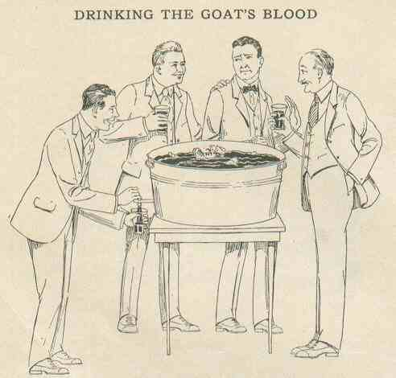

Sunday, March the 26th, 2006
back to: title, date or indexes
British Summer Time begins today. The clocks go forward by one hour, unless you believe The Guardian, which helpfully advised readers to turn their clocks back. As a result, thousands of people will be late for the traditional ceremony marking the start of summer, due to take place in thousands, if not millions, of homes across the land.
